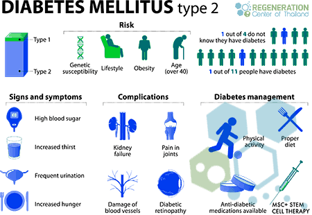

Your diabetes diet is simply a healthy-eating plan that will help you control your blood sugar. You'll need to focus your diet on more fruits, vegetables, lean proteins and whole grains. These are foods that are high in nutrition and fiber and low in fat and calories. You'll also cut down on saturated fats, refined carbohydrates and sweets. In fact, it's the best eating plan for the entire family. Sugary foods are OK once in a while. They must be counted as part of your meal plan.
Everyone needs regular aerobic activity. This includes people who have diabetes. Physical activity lowers your blood sugar level by moving sugar into your cells, where it's used for energy. Physical activity also makes your body more sensitive to insulin. That means your body needs less insulin to transport sugar to your cells.
Aim for at least 30 minutes or more of moderate physical activity most days of the week, or at least 150 minutes of moderate physical activity a week. Bouts of activity can be a few minutes during the day. If you haven't been active for a while, start slowly and build up slowly. Also avoid sitting for too long. Try to get up and move if you've been sitting for more than 30 minutes.
Treatment for type 1 diabetes involves insulin injections or the use of an insulin pump, frequent blood sugar checks, and carbohydrate counting. For some people with type 1 diabetes, pancreas transplant or islet cell transplant may be an option
Treatment of type 2 diabetes mostly involves lifestyle changes, monitoring of your blood sugar, along with oral diabetes drugs, insulin or both.
Depending on your treatment plan, you may check and record your blood sugar as many as four times a day or more often if you're taking insulin. Careful blood sugar testing is the only way to make sure that your blood sugar level remains within your target range. People with type 2 diabetes who aren't taking insulin generally check their blood sugar much less often.
People who receive insulin therapy also may choose to monitor their blood sugar levels with a continuous glucose monitor. Although this technology hasn't yet completely replaced the glucose meter, it can lower the number of fingersticks necessary to check blood sugar and provide important information about trends in blood sugar levels.
Even with careful management, blood sugar levels can sometimes change unpredictably. With help from your diabetes treatment team, you'll learn how your blood sugar level changes in response to food, physical activity, medications, illness, alcohol and stress. For women, you'll learn how your blood sugar level changes in response to changes in hormone levels.
People with type 1 diabetes must use insulin to manage blood sugar to survive. Many people with type 2 diabetes or gestational diabetes also need insulin therapy.
Many types of insulin are available, including short-acting (regular insulin), rapid-acting insulin, long-acting insulin and intermediate options. Depending on your needs, your provider may prescribe a mixture of insulin types to use during the day and night.
Insulin can't be taken orally to lower blood sugar because stomach enzymes interfere with insulin's action. Insulin is often injected using a fine needle and syringe or an insulin pen — a device that looks like a large ink pen
A continuous glucose monitor, on the left, is a device that measures blood sugar every few minutes using a sensor inserted under the skin. An insulin pump, attached to the pocket, is a device that's worn outside of the body with a tube that connects the reservoir of insulin to a catheter inserted under the skin of the abdomen. Insulin pumps are programmed to deliver specific amounts of insulin continuously and with food.
Sometimes your provider may prescribe other oral or injected drugs as well. Some diabetes drugs help your pancreas to release more insulin. Others prevent the production and release of glucose from your liver, which means you need less insulin to move sugar into your cells.
Still others block the action of stomach or intestinal enzymes that break down carbohydrates, slowing their absorption, or make your tissues more sensitive to insulin. Metformin (Glumetza, Fortamet, others) is generally the first drug prescribed for type 2 diabetes.
High blood sugar (hyperglycemia in diabetes) can occur for many reasons, including eating too much, being sick or not taking enough glucose-lowering medication. Check your blood sugar level as directed by your provider. And watch for symptoms of high blood sugar, including
Urinating often
Feeling thirstier than usual,
Blurred vision,
Tiredness (fatigue),
Headache,
Irritability
If your blood sugar level drops below your target range, it's known as low blood sugar (diabetic hypoglycemia). If you're taking drugs that lower your blood sugar, including insulin, your blood sugar level can drop for many reasons. These include skipping a meal and getting more physical activity than normal. Low blood sugar also occurs if you take too much insulin or too much of a glucose-lowering medication that causes the pancreas to hold insulin.
Check your blood sugar level regularly and watch for symptoms of low blood sugar, including:
Sweating,
Shakiness,
Weakness,
Hunger,
Dizziness,
Headache,
Blurred vision,
Heart palpitations,
Irritability,
Slurred speech,
Drowsiness,
Confusion,
Fainting,
Seizures.